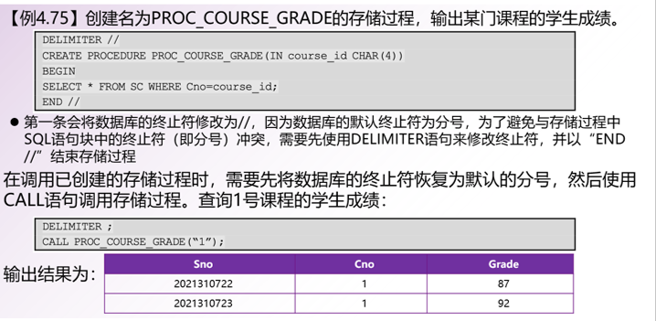

Database
肯定有错，PPT来源于学校，如果侵权请通过邮箱告知
SQL初步
Structed Query Language 结构化查询语言
属性域的类型
- char(n) 固定长度字符串，用户指定长度为n，若输入为短于n的字符串，自动补空格
- varchar(n) 可变长度字符串，最大长度为n，由用户指定
- int 整数型
- smallint 小整数
- numeric(p,d) 定点小数，长度一共为p其中有d位小数，p与d由用户指定
- real,double precision 浮点数 双精度浮点数
- float(n) 精度为n的浮点数
完整性约束
1 | #非空约束： |
创建表
1 | CREATE TABLE r(A1 D1,A2 D2,....,An Dn, |
r是关系名字，A是属性名字，D是属性域类型

1 | create table department( |
Insert
1 | insert into R values ('','','',...,''); |
Delete
1 | #保留关系，移除所有元组 |
Drop
1 | #删除关系r |
Alter
增删属性
1 | alter table r add A D |
也可以用于创建表之后对表进行新的主码约束和非空限制等操作
查询

返回结果为关系
Select
关系代数中的投影运算
1 | #选取所有列 |

1 | select ID,name,salary/12 |
tips：
- 在sql中是不区分大小写的
- sql中查询默认不会自动去重，想要去重需要加上distinct关键字，想要显示地不去重，可以使用all关键字
1 | select distinct dept_name from instructor |
1 | select all dept_name from instructor |
3.select 语句中可以包含算术表达式，比如= ,-,*,/作用于属性上
1 | select ID, name, salary/12 from instructor |
where
- 限制选取元组的条件，类似于关系代数的选择操作
- 可以使用 and or not 进行多个条件的连接，只有让where语句为true的元组才能被选中
1 | select name |
- between 比较运算符表 [ ]（数学上的左闭右闭）
1 | select name from instructor where salary between 90000 and 100000 |
- 元组比较
1 | select name, course_id |
from
- 若from后面有多个关系，则是对多个关系进行笛卡尔乘积，在进行where的判断，最后执行select
- 支持重命名操作
更名
1 | oldname as newname |
字符串
like关键字
% :匹配任意字符串
_ : 匹配任意字符
1 | select name |
escape关键字
表转义字符
1 | like '100 \%' escape '\' |
运算
-
连接运算 || 表连接
-
字符串匹配对大小写敏感
-
大小写转换
-
计算字符串长度等
排序
order by
排列元组的显示顺序
默认为升序，加上desc关键字表降序，也可以加asc显式地指出为升序
1 | select distinct name |
集合运算
并 union
1 | (select course_id from section where sem = ‘Fall' and year = 2009) |
交 intersect
1 | (select course_id from section where sem = ‘Fall' and year = 2009) |
差 except
1 | (select course_id from section where sem = ‘Fall' and year = 2009) |
sql上的集合运算自动去重
若想要保留重复元组，则要显式地指出，union all, intersect all except all
Null 空值
-
表未知 unkonwn
-
空值参与任何算术表达式的结果都是空值
-
is null 可以用来检验是否是空值，如果是空值则返回true
1
2
3select name
from instructor
where salary is null -
空值与逻辑运算
-
如果where子句的谓词计算出的结果为false或者是unkonwn则元组不可出现在结果中
聚集函数
- avg: average value
- min: minimum value
- max: maximum value
- sum: sum of values
- count: number of values
输入元组集合返回单个值
-
avg，min，max，sum的作用对象必须是数字集
-
除了count其他函数面对空值都视而不见，如果表中只有空值，count会返回0，其他函数范围null
-
聚集函数只可以出现在select子句和having子句中，不可以出现在where中
1 | select avg (salary) |
分组
group by
1 | #分组聚合 |
没有出现在select聚集函数中的属性必须出现在group by中，出现在group by中的属性不一定出现在select中
having
-
无group by无having，形成分组之后再应用having语句
-
from -> where -> group by -> having -> select ->order by
-
任何出现在having语句中但未被聚集的属性必须出现在group by语句中
1 | select dept_name, avg (salary) |
嵌套子查询
where
-
集合成员资格
in：若在则true
1
2
3
4
5
6select count (distinct ID)
from takes
where (course_id, sec_id, semester, year) in
(select course_id, sec_id, semester, year
from teaches
where teaches.ID= 10101);not in：不在则true
1
2
3
4
5
6
7select distinct course_id
from section
where semester = 'Fall' and year= 2009 and
course_id not in (select course_id
from section
where semester = 'Spring'and year= 2010); -
集合比较
some：至少有一个
1
2
3
4
5
6select name
from instructor
where salary > some (select salary
from instructor
where dept name = 'Biology');
#查询工资比同部门至少一个人高的生物系教授的名字all：全都
1
2
3
4
5
6select name
from instructor
where salary > all (select salary
from instructor
where dept name = 'Biology');
#查找生物系教授中工资最大（比同系其他教授都高）的教授名字 -
集合约束
空关系验证 exists
1 | select course_id |
1 | # Find all students who have taken all courses offered in the Biology department. |
检查是否存在重复元组 unique
unique：存在重复返回false，不存在则返回true
not unique：反之
1 | #Find all courses that were offered at most once in 2009 |
from
1 | select dept_name, avg_salary |
with
定义临时关系，只能在同一查询的后面使用
1 | with max_budget (value) as #max_budget 是临时关系 |
1 | # Find all departments where the total salary is greater than the average of the total salary at all departments |
select
标量子查询：用在 只返回一个包含单个属性的元组的查询 的地方
如果子查询返回多于一个结果的元组会出现error
1 | select dept_name, ( select count(*) from instructor where department.dept_name = instructor.dept_name) as num_instructors |
删除
delete
- delet只能删除元组
- 一个delete只能作用与一个关系上
1 | #Delete all instructors |
1 | #a funny example: |
插入
insert
1 | insert into course |
1 | #Add a new tuple to student with tot_creds set to null |
系统在执行任何插入之前先执行完select语句十分重要
Otherwise queries like
insert into table1 select * from table1
would cause problem
更新
update
改变某个元组的某个属性的值
update table1
set attribute1 [ ]
where
1 | #Increase salaries of instructors whose salary is over $100,000 by 3%, and all others by a 5% |
case
case
when predict1 then result1
when predict2 then result2
…
else result
end
1 | #可以用case语句进行书写 |
update 与标量子查询
1 | #Recompute and update tot_creds value for all students |
SQL进阶
连接
join ：输入两个关系返回一个关系
自然连接
内连接
左外连接
1 | course natural left outer join prereq |
出现在左边的元组一定会出现在结果之中，对于没有右边信息的用null填充
右外连接
1 | course natural right outer join prereq |
出现在右边关系中的元组一定会出现在结果之中，对于没有左边信息的用null填充
全外连接
1 | course natural full outer join prereq |
出现在两个关系的元组都会出现在结果中，无信息用null填充
连接条件
只有满足条件的元组才能进行连接，并且条件中的属性在结果中会被重复保留
1 | course inner join prereq on course.course_id = prereq.course_id |
1 | course left outer join prereq on course.course_id = prereq.course_id |
视图
A view provides a mechanism to hide certain data from the view of certain users.
Any relation that is not of the conceptual model but is made visible to a user as a “virtual relation” is called a view.
视图的定义
1 | create view v as < query expression > |
- 一旦视图被定义，那么这个视图的名字可以用来代指视图产生的虚拟关系
- 数据库系统存储的是与视图关系相关联的查询表达式
- 视图关系概念上包含了查询结果的元组但不进行预先计算和存储
- 视图一旦被创建，在被显示删除之前一直可用
1 | create view faculty as |
1 | # Find all instructors in the Biology department |
用视图定义视图
1 | create view physics_fall_2009 as |
- 若视图v1在定义的时候使用了视图v2，则v1直接依赖于v2
- 若视图v1在定义的时候使用了视图v2，或者视图v1到视图v2之间存在依赖路径，则v1依赖于v2
- A view relation v is said to be recursive if it depends on itself.
判断闭包的方法
repeat
** Find any view relation *vi* in e1
Replace the view relation v**i by the expression defining v**i
until no more view relations are present in e1
As long as the view definitions are not recursive, this loop will terminate
视图更新
1 | #向视图中添加新的元组 |
sql视图是可更新（插入 删除 更新），若满足下列条件
The from clause has only one database relation.
The select clause contains only attribute names of the relation, and does not have any expressions, aggregates, or distinct specification.
Any attribute not listed in the select clause can be set to null
The query does not have a group by or having clause.
物化视图
create a physical table containing all the tuples in the result of the query defining the view
tips：
-
If relations used in the query are updated, the materialized view result becomes out of date
-
Need to maintain the view, by updating the view whenever the underlying relations are updated.
-
视图是一种“虚关系”，实际查询时需要根据定义查询底层关系，当存在大量这样的查询时会有较高的成本。
-
某些数据库支持物化视图，像存储表一样将创建的视图关系“物化”存储在数据库中。
-
物化视图的创建、修改与删除语法同视图类似，区别是多了关键字 MATERIALIZED
完整性约束
保护数据的一致性
单个关系上的完整性约束
**not null ** 非空
1 | #Declare name and budget to be not null |
primary key 主码
既要非空又要保证唯一性
**unique ** 唯一性
1 | unique ( A1, A2, …, Am) |
- 让A1,A2,…,Am，成为了超码
- 声明了唯一性的属性允许为空
check §, where P is a predicate
关系中的每个元组都要满足谓词P
1 | #ensure that semester is one of fall, winter, spring or summer: |
引用完整性
- 保证引用关系中的给定属性集合的取值也在被引用关系的特定属性集的取值中出现
- 外码是引用完整性约束的一种形式，其中被引用的属性构成被引用关系的主码
- 至少要保证被引用关系的唯一性，要么主码约束要么唯一性约束
1 | create table course ( |
引用完整性上的级联操作
1 | create table course ( |
复杂check语句
复杂的check语句在我们希望保证数据的完整性是有用的，但开销十分巨大
1 | check (time_slot_id in (select time_slot_id from time_slot)) |
上述语句不仅要在section更新时候进行计算，也要在time_slot发生更新的时候计算
断言
谓词，表达了希望数据库总满足的一个条件
1 | create assertion <assertion-name> check <predicate>; |
创建断言的时候系统会检测其有效性，检测和维护有效性的开销很大，但触发器可以实现等价功能
数据类型
创建索引
索引：一种数据结构，允许数据库系统高效地找到关系中具有该属性指定值的元组，而不扫描关系的所有元组
1 | create table student |
用户自定义类型
1 | create type Dollars as numeric (12,2) final |
域
大对象类型
授权
1 | grant <privilege list> |
sql中的权限：
- select：allows read access to relation,or the ability to query using the view
- insert:the ability to insert tuples
- update: the ability to update using the SQL update statement
- delete：the ability to delete tuples.
- all privileges：used as a short form for all the allowable privileges
移除权限
1 | revoke <privilege list> |
- 如果 **
**包含public那么全部的用户会失去权限，除了授权用户 - 如果相同的权限被不同的人授予给相同的用户两次，那么在被一次撤权后会保留权限。
- 所有依赖被撤除权限的权限也会被撤除
角色
1 | create role instructor |
视图的授权
1 | create view geo_instructor as |
授权的转移
1 | #允许被授权用户进行授权 |
一个用户具有权限等价于授权图中存在由根到用户节点的路径
高级SQL
函数与过程
函数
1 | #Define a function that, given the name of a department, returns the count of the number of instructors in that department. |
存储过程

区别
- 存储过程和函数是事先经过编译并存储在数据库中的一段SQL语句的集合
- 存储过程和函数可以对一段代码进行封装，以便日后调用
- 数据库中创建存储过程的语句为CREATE PROCEDURE，并通过CALL语句加存储过程名来调用存储过程
- 数据库中创建函数的语句为CREATE FUNCTION，并通过函数名来调用函数
- 存储过程和函数都用于提高数据库性能，减少频繁访问数据库和减少网络延迟等方式加速执行效率。
- 函数：简单的计算型任务，例如字符串或日期拼接、返回单个值等。
- 存储过程：复杂的业务逻辑、更新和删除相关操作。
- 存储过程需要显式地被调用，并且可以包含各种复杂的控制结构和代码块。
触发器
可以被系统自动执行、作为数据库修改的side effect 的语句
-
我们要指定触发器执行的条件和动作
-
触发器事件可以是插入、删除、更新，其中更新可以限定到一个属性上 更新前后可以被引用
1
2referencing old row as :for deletes and updates
referencing new row as : for inserts and updates
1 | create trigger setnull_trigger before update of takes |
1 | create trigger credits_earned after update of takes on (grade) |
闭包查询
1 | with recursive rec_prereq(course_id, prereq_id) as ( |